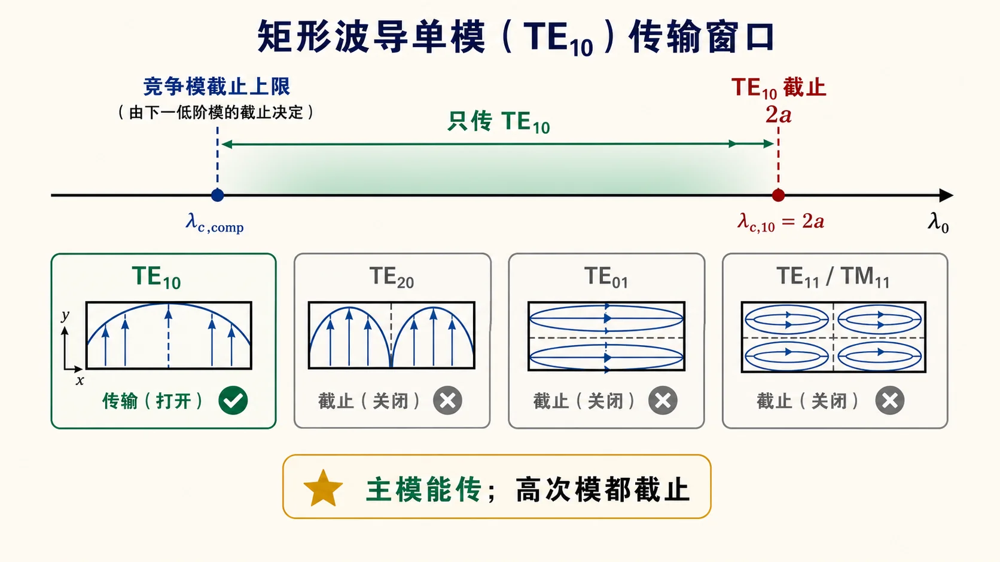

第三次作业（Lec13–16）第 1 题：只传输 $\mathrm{TE}_{10}$ 的尺寸条件§
对应知识点：02-单模工作区与介质填充
题意（与主册一致）：在矩形波导中（宽边 $a$、窄边 $b$，$a>b$），导出只传输 $\mathrm{TE}_{10}$ 时，工作波长 $\lambda_0$（或工作频率 $f$）与 $a$、$b$ 应满足的关系；分空气与全填充电介质（$\mu_{\mathrm{r}}=1$、$\varepsilon_{\mathrm{r}}>1$）说明。
导航： 总目录 · 符号与导读 · Lec10–11 · Lec11～12 · Lec13–Lec16 主册 · 分题 1 · 2 · 3 · 4 · 5 · 6 · 7 · 8 · 9 · 10 · 11 · 12 · 下一题 第2题 · 附录
一、前置知识§
1. 专有名词§
- 矩形波导：横截面为矩形的理想金属波导，导行方向取为 $z$。记宽边为 $a$、窄边为 $b$，常设 $a>b$。
- $\mathrm{TE}_{mn}$ / $\mathrm{TM}_{mn}$：横截面上场随 $x,y$ 取驻波，整数 $m,n$ 为沿 $a,b$ 的“半正弦”半周数。$\mathrm{TM}_{mn}$ 要求 $m,n\ge 1$；$\mathrm{TE}_{mn}$ 允许 $m$ 或 $n$ 为 0，但不同时为 0。
- 截止与导行：截止波数 $k_\mathrm{c}$、截止波长 $\lambda_\mathrm{c}$、截止频率 $f_\mathrm{c}$ 只由截面几何与 $(m,n)$ 决定。无耗时某模能导行当且仅当 $\beta$ 为实数；空气填充时常写 $\lambda_0<\lambda_{\mathrm c}$ 或 $f>f_\mathrm{c}$。
- 主模 / 高次模 / 竞争模：$\mathrm{TE}_{10}$ 的 $\lambda_{\mathrm{c},10}=2a$ 在常见排序中最大，为主模；$\mathrm{TE}_{20}$ 等称高次模；列只传 $\mathrm{TE}_{10}$ 时须与主模竞争导行的低次、高次模称竞争模（本题记 $\mathrm{TE}_{20}$、$\mathrm{TE}_{01}$、$\mathrm{TE}_{11}/\mathrm{TM}_{11}$ 等）。
- 简并：$\mathrm{TE}_{11}$ 与 $\mathrm{TM}_{11}$ 有相同 $k_\mathrm{c}$（$\lambda_\mathrm{c}$ 同值），是两种场分布不同的波型。
- 全填充电介质：$\mu_{\mathrm{r}}=1$、$\varepsilon_{\mathrm{r}}>1$ 时，体区内波数 $k=k_0\sqrt{\varepsilon_{\mathrm{r}}}$；横截面本征问题与空气相同，故 $k_{\mathrm{c},mn}$ 与几何有关而与 $\varepsilon_\mathrm{r}$ 无直接关系（仍由 $a,b,m,n$ 决定）。
2. 核心公式（含义与在题中角色）§
-
本征值与截止
$k_{\mathrm{c},mn} = \sqrt{\left(m\pi/a\right)^2 + \left(n\pi/b\right)^2}$；$\lambda_{\mathrm{c},mn} = 2\pi/k_{\mathrm{c},mn}$。角色：用 $\lambda_0$ 与 $\lambda_{\mathrm{c},mn}$ 比较，判断该 $(m,n)$ 模是否导行。 -
导行/不导行（空气）
导行 $\Leftrightarrow \lambda_0 < \lambda_{\mathrm{c},mn} \Leftrightarrow f>f_{\mathrm{c},mn}$（等价的 $f$ 判据在第三节）。不导行时作业常写 $\lambda_0 \ge \lambda_{\mathrm{c},mn}$（恰为截止是否取等以教材为准；开区间内部结论不受影响）。 -
典型竞争模的 $\lambda_\mathrm{c}$（见第三节推导）
$\lambda_{\mathrm{c},20}=a$；$\lambda_{\mathrm{c},01}=2b$；$\lambda_{\mathrm{c},11}^{(\mathrm{TE})}=\lambda_{\mathrm{c},11}^{(\mathrm{TM})}=2\big/\sqrt{1/a^2+1/b^2}$。角色：与 $\lambda_{\mathrm{c},10}=2a$ 联立，得到只传 $\mathrm{TE}_{10}$ 的下界/上界**或 $\max\{\cdot\}$ 合并不等式。 -
全填充时截止量的缩放
$f_{\mathrm{c},mn,\varepsilon} = f_{\mathrm{c},mn,\mathrm{air}}/\sqrt{\varepsilon_{\mathrm{r}}}$，$ \lambda_{\mathrm{c},mn,\varepsilon} = \lambda_{\mathrm{c},mn,\mathrm{air}}/\sqrt{\varepsilon_{\mathrm{r}}}$。角色：同一几何下介质使各模截止频率同步变低/截止波长同步变短；不能只缩放 $\mathrm{TE}_{10}$ 的截止量。
列不等式与合并不等式的逻辑见第二节；完整书写见第三节。
二、分析思路§
1. 把「只传 $\mathrm{TE}_{10}$」拆成两条逻辑
- 要传的：主模 $\mathrm{TE}_{10}$ 必须处于导行状态。
- 不要传的：除 $\mathrm{TE}_{10}$ 外，凡横截面上可能出现的低次、高次模，都必须不导行（在截止区一侧）。
不能只凭「$\mathrm{TE}_{10}$ 能传」就结束，必须与紧邻主模的若干高次模比截止波长，写成不等式组。
2. 用哪条充要条件
均匀填充、无耗时，某 $(m,n)$ 模能导行的充要条件为
$$ \beta_{mn} = \sqrt{k^2 - k_{\mathrm{c},mn}^2}\ \text{为实数} \;\Leftrightarrow\; \lambda_0 < \lambda_{\mathrm{c},mn} \;\Leftrightarrow\; f > f_{\mathrm{c},mn}. $$
不导行则取反向（作业里常写 $\lambda_0 \ge \lambda_{\mathrm{c},mn}$ 表示该模不传播；端点“恰为截止”是否允许以教材为准，区间内部的写法不受影响）。
3. 先写 $k_{\mathrm{c}}$ 再点名列竞争模
矩形波导
$$ k_{\mathrm{c},mn} = \sqrt{\left(\frac{m\pi}{a}\right)^2 + \left(\frac{n\pi}{b}\right)^2}, \qquad \lambda_{\mathrm{c},mn} = \frac{2\pi}{k_{\mathrm{c},mn}}. $$
在 $a>b$ 下，最先需要核对的往往是（除 $\mathrm{TE}_{10}$ 外）：
- $\mathrm{TE}_{20}$：$\lambda_{\mathrm{c},20}=a$；
- $\mathrm{TE}_{01}$：$\lambda_{\mathrm{c},01}=2b$；
- $\mathrm{TE}_{11}$ 与 $\mathrm{TM}_{11}$：同一 $k_{\mathrm{c}}$（简并），
$$ \lambda_{\mathrm{c},11} = \frac{2}{\sqrt{\dfrac{1}{a^2}+\dfrac{1}{b^2}}}. $$
$a$ 与 $2b$、与 $\lambda_{\mathrm{c},11}$ 谁大谁小决定哪一条不等式最紧（最先把单模区「掐窄」），因此一般不能只背一个 $a<\lambda_0<2a$，而要会列完整不等式再合并；若 $2b\ll a$ 且已验证 $\lambda_{\mathrm{c},11}$ 不紧，才常用 $a<\lambda_0<2a$ 的简化写法。
4. 全填充 $\varepsilon_{\mathrm{r}}$ 时多一步
- 几何不变 $\Rightarrow$ $k_{\mathrm{c},mn}$ 不变（与 $\varepsilon_{\mathrm{r}}$ 无关）。
- 体区内波数 $k = k_0\sqrt{\varepsilon_{\mathrm{r}}}$，故各模
$$ f_{\mathrm{c},mn,\varepsilon} = \frac{f_{\mathrm{c},mn,\mathrm{air}}}{\sqrt{\varepsilon_{\mathrm{r}}}}, \qquad \lambda_{\mathrm{c},mn,\varepsilon} = \frac{\lambda_{\mathrm{c},mn,\mathrm{air}}}{\sqrt{\varepsilon_{\mathrm{r}}}}. $$
同几何、同 $f$ 或同 $\lambda_0$ 下更容易满足「$\lambda_0 < \lambda_{\mathrm{c}}$」，高次模更易被激发，单模工作区相对空气变窄；列式时应对所有相关模的 $f_{\mathrm{c}}$ 或 $\lambda_{\mathrm{c}}$ 同步缩放，不能只缩放主模。
三、标准解答§
解：
（1）记号线与主模、高次模的截止关系
设宽边为 $a$、窄边为 $b$，$a>b$，空气填充时 $k=2\pi/\lambda_0=\omega/c$。矩形波导 $\mathrm{TE}_{mn}$、$\mathrm{TM}_{mn}$ 的截止波数
$$ k_{\mathrm{c},mn} = \sqrt{\left(\frac{m\pi}{a}\right)^2 + \left(\frac{n\pi}{b}\right)^2}, \qquad \lambda_{\mathrm{c},mn} = \frac{2\pi}{k_{\mathrm{c},mn}}. $$
「只传输 $\mathrm{TE}_{10}$」等价于：
- $\mathrm{TE}_{10}$ 导行：
$$ \lambda_0 < \lambda_{\mathrm{c},10} = 2a; $$
- 对其余至少需考虑的模（如 $\mathrm{TE}_{20}$、$\mathrm{TE}_{01}$、$\mathrm{TE}_{11}$、$\mathrm{TM}_{11}$ 等）均不导行：
$$ \lambda_0 \ge \lambda_{\mathrm{c},mn} \quad \text{（对每一个这样的 }(m,n)\text{）}. $$
其中
$$ \lambda_{\mathrm{c},20}=a,\quad \lambda_{\mathrm{c},01}=2b,\quad \lambda_{\mathrm{c},11}^{(\mathrm{TE})}=\lambda_{\mathrm{c},11}^{(\mathrm{TM})}= \frac{2}{\sqrt{\dfrac{1}{a^2}+\dfrac{1}{b^2}}}. $$
（2）空气填充：合并不等式
由 $\mathrm{TE}_{10}$ 与「$\mathrm{TE}_{20}$ 不导行」得
$$ a \le \lambda_0 < 2a \quad \text{（若要求严格在通带内，常写 } a<\lambda_0<2a\text{）}. $$
要同时不让 $\mathrm{TE}_{01}$、$\mathrm{TE}_{11}/\mathrm{TM}_{11}$ 导行，需
$$ \lambda_0 \ge 2b,\qquad \lambda_0 \ge \frac{2}{\sqrt{\dfrac{1}{a^2}+\dfrac{1}{b^2}}}. $$
因此 单看波长时，下界为上述各截止波长中的最大者：
$$ \boxed{ \max\left\{ a, 2b, \frac{2}{\sqrt{\dfrac{1}{a^2}+\dfrac{1}{b^2}}}, \ldots \right\} \;\le\; \lambda_0\; <\; 2a } $$
（若还需排除更高次模，在 $\max\{\cdot\}$ 中继续补项；直到所有可能低于 $\lambda_{\mathrm{c},10}$ 的模都列入。）
在标准矩形波导常见比例 $2b < a$（如 BJ-100 / WR-90：$a=22.86\,\mathrm{mm},\,b=10.16\,\mathrm{mm}$，$2b=20.32\,\mathrm{mm}<a$）时，有
- $2b < a$，故当 $\lambda_0 \ge a$ 时已自动满足 $\lambda_0 \ge 2b$；
- 对该类尺寸再比较 $a$ 与 $\lambda_{\mathrm{c},11}$，常有 $\lambda_{\mathrm{c},11} < a$，故 $\max\{a,2b,\lambda_{\mathrm{c},11}\}=a$（须代入验证；不同 $a/b$ 时 $\max$ 可改为 $2b$ 或其它项，不能默认下界是 $a$）。
若 $2b \ge a$（窄边相对较宽），则「$\lambda_0 \ge 2b$」可能比「$\lambda_0 \ge a$」更严，工作波长带不能用 $a<\lambda_0<2a$ 代替，必须以前面 $\max\{\cdot\} \le \lambda_0 < 2a$ 为准。
于是仅由主模与紧邻高次模常写为
$$ \boxed{a < \lambda_0 < 2a} $$
（答卷建议：写出上式之前点明已核对 $2b$、$\lambda_{\mathrm{c},11}$ 等，避免被扣分。）
（3）全填充：$\varepsilon_{\mathrm{r}}>1$，$\mu_{\mathrm{r}}=1$
$k_{\mathrm{c},mn}$ 仍由 $a$、$b$、$m$、$n$ 决定，与空气相同。填充后
$$ f_{\mathrm{c},mn,\varepsilon} = \frac{f_{\mathrm{c},mn,\mathrm{air}}}{\sqrt{\varepsilon_{\mathrm{r}}}}, \qquad \lambda_{\mathrm{c},mn,\varepsilon} = \frac{\lambda_{\mathrm{c},mn,\mathrm{air}}}{\sqrt{\varepsilon_{\mathrm{r}}}}. $$
「只传 $\mathrm{TE}_{10}$」在以频率表述时：$\mathrm{TE}_{10}$ 导行而其余模不导行，即
$$ f_{\mathrm{c},10,\varepsilon} < f,\qquad f \le f_{\mathrm{c},mn,\varepsilon} \quad \text{对其它相关 }(m,n) $$
（具体边界的开闭依课程约定）；或统一换成 $\lambda_0$ 与缩放后的各 $\lambda_{\mathrm{c},mn,\varepsilon}$ 书写同一组不等式。
物理解释：在同一波导尺寸下，$\varepsilon_{\mathrm{r}}$ 增大使各模截止频率降低，在固定 $f$ 下更易出现多模，单模工作区变窄。
列式注意：在空气中先算得各模的 $f_{\mathrm{c},mn}$ 或 $\lambda_{\mathrm{c},mn}$，全填充时一律按 $\displaystyle\frac{1}{\sqrt{\varepsilon_{\mathrm{r}}}}$ 比例缩放，再与（2）中同一套单模不等式联立，勿只缩放主模。
（4）本题的结论性表述（可写在卷末）
- 空气：主模能传 + 所列举高次模均不能传，得到 $\lambda_0$（或 $a,b$ 与 $f$）的不等式组；典型 $2b<a$ 时主波长带常简写为 $a<\lambda_0<2a$，须补一句已核对 $\mathrm{TE}_{11}$ 等。
- 全介质：$k_{\mathrm{c}}$ 不变，$f_{\mathrm{c}}$、$\lambda_{\mathrm{c}}$ 同除以 $\sqrt{\varepsilon_{\mathrm{r}}}$ 后，重复上述同一套单模判据。
图示§

图：阴影区为「主模能传且所列竞争模不导行」的 $\lambda_0$ 开区间在数轴上的位置；下界为 $\max\{a,2b,\lambda_{\mathrm{c},11}^{(\mathrm{TE})}\}$ 等中的最大者、上界为 $\lambda_{\mathrm{c},10}=2a$ 联立后所得（对一般 $a,b$ 须代入，勿只背 $a<\lambda_0<2a$）。
四、与主册的衔接§
- 全册第 2、4、6 题含 BJ-100 等具体数值，可与本节「$\max\{a,2b,\lambda_{\mathrm{c},11}\}$」的验算对照。
- 符号与 Lec13–Lec16 主文件开头总述一致。
本文件为第 1 题独立成篇：含「一 前置知识」「二 分析思路」「三 标准解答」「四 与主册的衔接」，可与 Lec13–Lec16 主册 文首与导航并读。